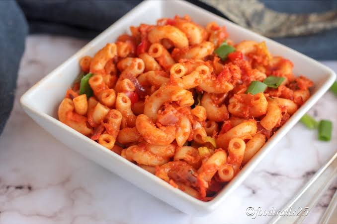

Jollof Macaroni

Image of a Jollof macaroni
Jollof macaroni is a top tier dinner for any household. It's easy and quick to make and could even be packed to be eaten later.
Ingredients
- Macaroni
- Onions
- Groundnut Oil
- Tomato paste
- Salt, Pepper and seasoning cube for taste
- crayfish
- fresh pepper
Steps
- Grind crayfish and fresh pepper with onions together
- Pour into the pot with groundnut oil and tomato paste and fry
- Pour water into the the pot and allow to boil
- Pour macaroni into the pot
- Add spices then you allow to boil until it is cooked